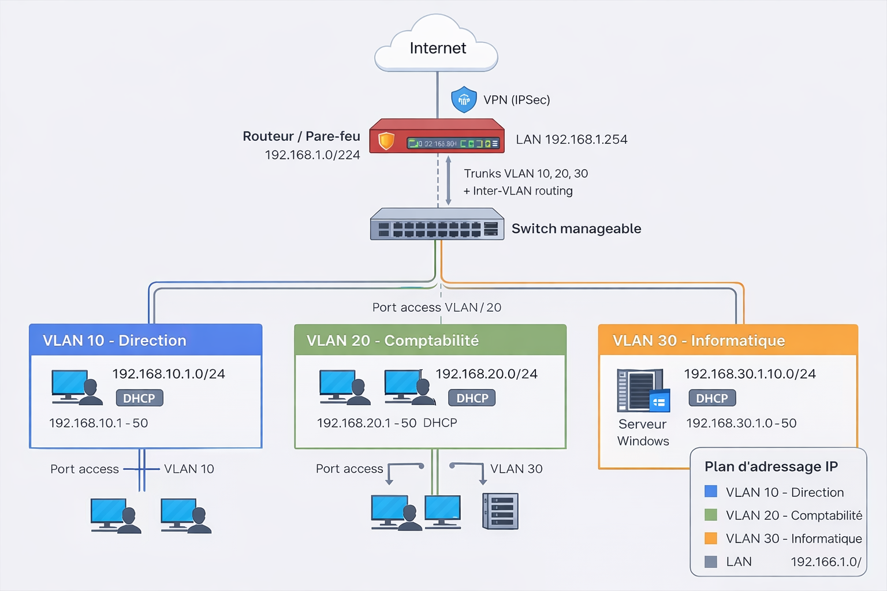

Contexte
Dans le cadre de ma formation BTS SIO option SISR, j’ai réalisé un projet de conception et de mise en place d’une architecture réseau segmentée avec VLAN afin de reproduire une infrastructure d’entreprise sécurisée.
Objectifs
- Créer une architecture réseau
- Configurer des VLAN
- Configurer DHCP
- Configurer DNS
- Tester la connectivité
- Sécuriser le réseau
Architecture
- Routeur / Firewall
- Switch manageable
- Serveur Windows
- Postes clients
- VLAN 10 - Direction
- VLAN 20 - Comptabilité
- VLAN 30 - Informatique
Schéma de l’architecture réseau
L’infrastructure réseau a été segmentée en plusieurs VLAN afin d’améliorer la sécurité, l’organisation et la gestion des accès.

Réalisation
- Configuration des VLAN sur le switch
- Configuration du routage inter-VLAN
- Mise en place du serveur DHCP
- Configuration du serveur DNS
- Tests ping / ipconfig / tracert
- Connexion des postes au réseau
Configuration technique
- Création VLAN 10 / 20 / 30 sur switch manageable
- Configuration trunk entre switch et routeur
- Configuration inter-VLAN routing
- DHCP par VLAN
- DNS interne
- Passerelle par VLAN
- Tests de connectivité
Sécurité
- Isolation des VLAN
- Restriction accès
- Firewall
- Gestion des ports
Résultats
Le réseau fonctionne correctement, les postes sont segmentés, les services DHCP et DNS fonctionnent, et l’infrastructure peut être utilisée dans un contexte professionnel.
Compétences BTS
- Concevoir une solution d’infrastructure
- Installer une solution réseau
- Tester une solution
- Sécuriser une infrastructure
- Documenter une solution
Preuves
- Schéma réseau
- Capture VLAN
- Capture DHCP
- Capture DNS
- Tests réseau